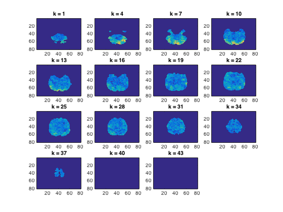

Crossvalidation searchlight
- For CoSMoMVPA's copyright information and license terms, #
- see the COPYING file distributed with CoSMoMVPA. #
Contents
Define data
config=cosmo_config(); data_path=fullfile(config.tutorial_data_path,'ak6','s01'); % In this exercise, output (NIFTI files) will be written to this directory output_data_path=config.output_data_path; data_fn=fullfile(data_path,'glm_T_stats_perrun.nii'); mask_fn=fullfile(data_path,'brain_mask.nii'); ds=cosmo_fmri_dataset(data_fn,'mask',mask_fn,... 'targets',repmat(1:6,1,10),... 'chunks',floor(((1:60)-1)/6)+1); % remove constant features (due to liberal masking) ds=cosmo_remove_useless_data(ds);
Neighborhood definition
% Use a searchlight with a more-or-less constant number of voxels, % both near the edges of the brain and in the center of the brain. nvoxels_per_searchlight=100; % Define a spherical neighborhood with approximately % 100 voxels around each voxel using cosmo_spherical_neighborhood, % and assign the result to a variable named 'nbrhood' % >@@> nbrhood=cosmo_spherical_neighborhood(ds,'count',nvoxels_per_searchlight); % <@@<
+00:00:14 [####################] -00:00:00 mean size 99.8
Define the measure as
define the measure as cosmo_crossvalidation_measure >@@>
measure=@cosmo_crossvalidation_measure; % <@@< % Define measure arguments. % Ideally we would like to use nfold_partitioner (and you probably % want to do this for a publication-quality), but this takes quite long. % Instead, we take a short-cut here and use an % odd-even partitioning scheme that has only one fold (test on odd chunks, % test on even) using cosmo_oddeven_partitioner. measure_args=struct(); % As the 'partitions' argument, use an odd-even partitioner % >@@> measure_args.partitions=cosmo_oddeven_partitioner(ds,'half'); % <@@< % Use cosmo_classify_lda as classifier argument for the measure % >@@> measure_args.classifier=@cosmo_classify_lda; % <@@<
Run searchlight
% Using the neighborhood, the measure, and the measure's arguments, run the % searchlight using cosmo_searchlight. Assign the result to a variable % named 'ds_cfy' % >@@> ds_cfy=cosmo_searchlight(ds,nbrhood,measure,measure_args); % <@@<
+00:02:39 [####################] -00:00:00
Visualize and store the results in a NIFTI file
% Visualize the results using cosmo_plot_slices cosmo_plot_slices(ds_cfy); % Set output filename output_fn=fullfile(output_data_path,... sprintf('lda_odd-even_accuracy_d%.0fvx.nii',nvoxels_per_searchlight)); % Write output to a NIFTI file using cosmo_map2fmri % >@@> cosmo_map2fmri(ds_cfy, output_fn); % <@@<